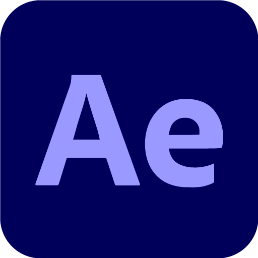
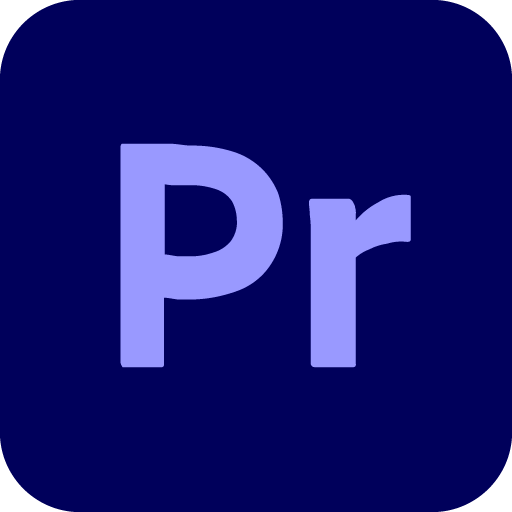
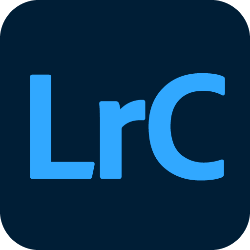
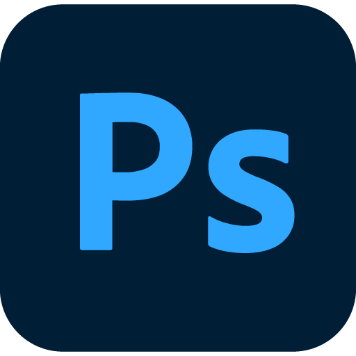
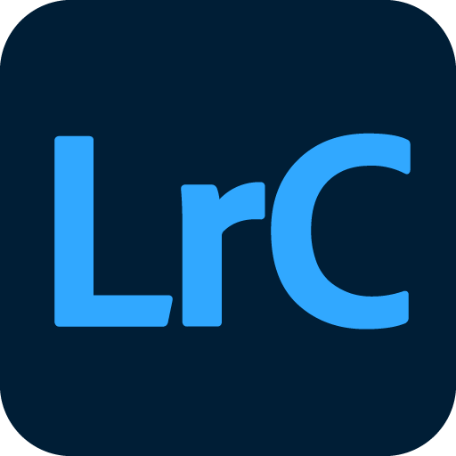
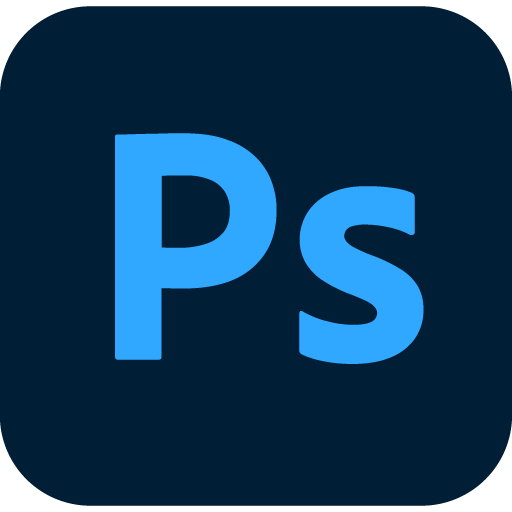

About me
I'm a media production graduate from the University of Lincoln, I've gained a decades worth of experience working across the board as a versatile videographer within multiple commercial environments covering a range of product lines. I've always endeavoured to make creative content that is eye-catching, adds value and delivers upon client expectations. As a individual that thrives upon expanding my horizons to become more of a well-rounded media professional, I've decided to delve into another passion of mine the wonderful world of programming.
Currently I'm undertaking a 16 week course covering all aspects of frontend development. Predominantly covering the core elements of HTML, CSS, Javascript and React. But in my spare time I'm venturing further into code with the likes of Python, C# and SQL.
Projects


 
 



Experience
Before I stepped into the world of programming I was predominantly a videographer working as a freelancer aswell as many corporate settings. One of my earliest jobs was working for Pendragon PLC a nationwide car dealership. During my time there I covered all their marketable content which included working on video, animation, graphic design and photography.
Eventhough being a videographer was my main working trade. Due to this being my first experience, straight out of university. This gave me some real insight into what I love about the creative industry the most, the diversity. Which is why in my own time, I always delve into new topics that could broaden those horizons and make me more of a well rounded media professional.
Outside of work, I dabble in a range of activities. Im quite the athlete, well atleast I think so. Basically in my terms this means I run around like a mad man in a variety of sports until my legs don't want to go anymore. I'm impartial to a good gaming session, eventhough I'm terrible. Evidence of which can be seen on Youtube, unfortunately. Showing my ridicolously bad dance moves at a gig or two and quenching my thrist for adrelaline by travelling to wherever life takes me. Whilst doing a whole host of mad and wonderful things you can get up to across the globe.